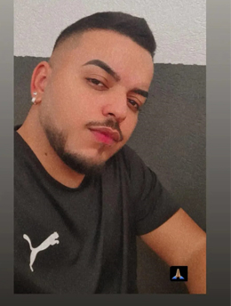

Iniciei este trabalho através de um amigo meu que era barbeiro, pois ele me inspirava. Apesar de estar no mercado há 3 anos, já realizava cortes há 6; sempre senti prazer em fazer isso e ainda saía ganhando, então para mim foi a melhor escolha que fiz até hoje. O que me motiva a continuar é saber o que isso me proporcionou, e está me proporcionando a conquistar tudo o que tenho hoje: Sou o dono do meu próprio negócio! E mesmo trabalhando por várias horas, é o que eu gosto de fazer e tenho o sonho de poder ensinar várias pessoas e crescer cada vez mais!
